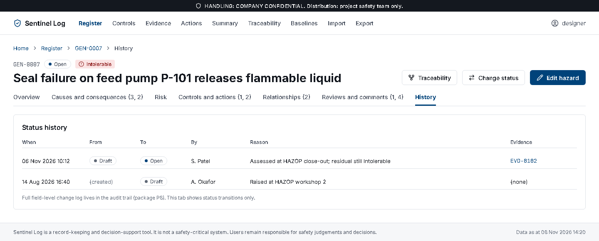

UC-14: View audit history. Actor: Reviewer. The hazard page also shows its status history
Main flow
- editor edits UAT-0001 description in the same run; audit list then shows an update entry for the hazard with actor and time (req-52).
- admin opens the audit list; list shows actor, action, and record columns with filter controls (req-52).
- admin filters by actor; list keeps matching rows (req-52).
- admin opens the update entry; detail shows actor, action, record, and the old and new description values (req-52).
- reviewer opens UAT-0001 history tab; tab shows status transitions with reason and evidence columns (req-78).
- audit list and entry show no edit or delete affordance for entries; the trail is append-only (req-52).
Stills

Cited check phrases
- hazard status history
- audit list shows update entry